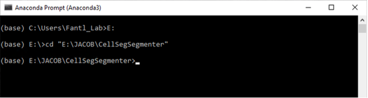
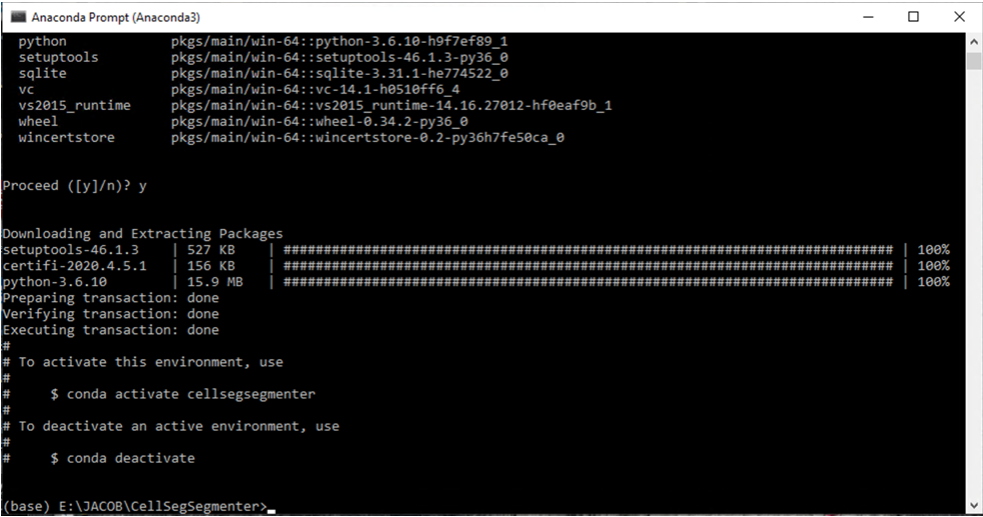

Setting Up CellSeg
This is a tutorial on how to set up CellSeg. This tutorial will cover:
- How to navigate to the CellSeg folder in terminal
- How to set up a CellSeg conda environment
- How to open the CellSeg program in terminal
This tutorial assumes you have already downloaded CellSeg and miniconda following the instructions here. This tutorial assumes no programming experience with Python or terminal. It will provide a step-by-step guide on how to get CellSeg up and running using conda. One of the advantages of CellSeg is it leverages the power of the Python programming language for deep learning while minimizing actual user programming. Advanced Python users can skip this tutorial, noting the dependencies for CellSeg are contained in the requirements.txt file in the CellSeg main folder.
Part 1: How to navigate to the CellSeg folder
The pictures for this tutorial are done in Windows on an Anaconda terminal, but the commands to type are identical on Mac and Linux terminal. Write down the absolute path to the CellSeg folder you previously downloaded. For example, the path to the CellSeg folder on my computer is: “E:\JACOB\CellSegSegmenter”.
First, we open the Anaconda terminal (on Mac/Linux, open terminal):

Notice that we are currently in the C: drive of the computer, but the path to the CellSeg folder is in the E: drive. To change drives on Windows, we type the letter preceding the directory path followed by a colon and hit enter. In our case, we type E:.
On Mac, change drives by first typing cd /Volumes then typing cd “drivename” where you replace drivename with the name of your drive in double quotes.

Now, we’re going to use that path to the CellSeg folder you wrote down earlier. We’ll navigate to the folder in one command by typing cd “filepath” where you replace filepath with the path to your CellSeg folder in double quotes. For example, I’m going to type
cd "E:\JACOB\CellSegSegmenter"and press Enter.
Now we are ready to set up CellSeg.
Part 2: How to set up a CellSeg conda environment
The CellSeg program requires several Python packages to run. A naïve approach would be to download all these packages one by one from the internet, but this requires downloading about 40 packages separately, and it leads to extra computer clutter, computer slowdowns, and unnecessary work to organize the packages. A solution that Python programmers have developed is the conda environment. Conda environments allow you to download and install all the necessary packages for a Python program like CellSeg with a single command in terminal, and the Conda environment automatically stores and organizes all packages efficiently.
We will walk through how to create a conda environment for CellSeg. First, we need to check that conda is installed properly on our machine. We do this by typing conda info and hitting Enter. If your output doesn’t look like this, or you get an error, then reinstall conda before continuing.

Now we’ll create the conda environment that CellSeg will run in. The name of our new environment will be cellsegsegmenter and we’ll create this by typing
conda create --name cellsegsegmenter python=3.6
Eventually, you will reach a prompt that says Proceed ([y]/n)?. Hit enter to continue.
Once you see an output similar to the image below, the environment has been created.
To use a conda environment, you need to activate it by typing conda activate env_name where you replace env_name with your environment name. In my case, I type conda activate cellsegsegmenter.
Notice now that the name of our environment appears in parentheses to the left of the directory path. That means we are now in the active conda environment. Next, we need to install the packages that CellSeg depends on. First, type the following and hit enter
conda config --add channels conda-forge
Next, type the following and hit enter
conda install --file requirements.txt
When prompted by Proceed ([y]/n)?, hit enter to continue. You should be able to watch as all the packages required for CellSeg are installed.
Part 3: Opening the CellSeg program in Jupyter Notebook
Finally, we’re going to open the CellSeg program. Jupyter Notebook is a software that provides a convenient way to view and run Python programs. To open CellSeg in Jupyter Notebook, type jupyter notebook and hit enter.
Jupyter notebook should open automatically in your default browser. If it doesn’t open, copy the first URL underneath the line “Or copy and paste one of these URLs:” and paste it into your browser of choice. When Jupyter notebook opens in your browser, you should see this:

CellSeg is now set up, and we’re ready for our first run.
Written by Jacob Bedia. Last edited on 6/26/20.